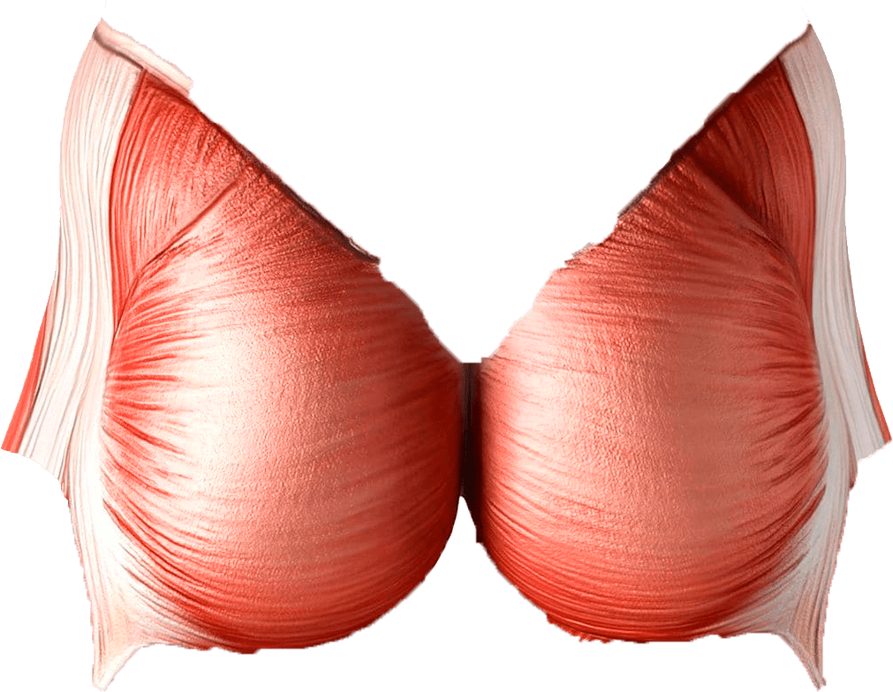
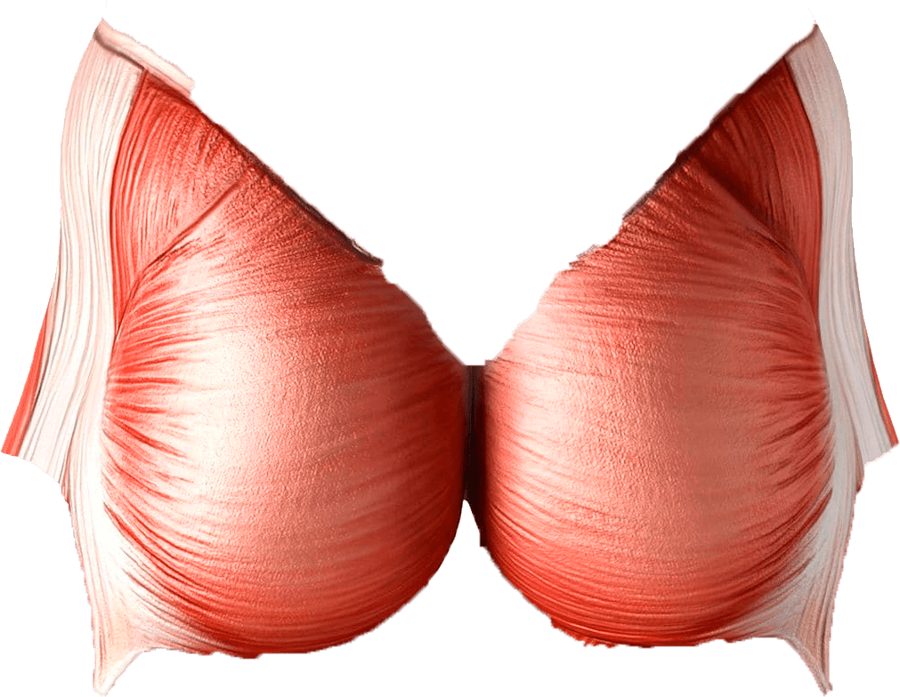

Тренировка мышц шеи
Тренировка мышц груди
Тренировка мышц плеч
Тренировка мышц бицепса
Тренировка мышц предплечья
Тренировка мышц груди
Тренировка мышц запястья
Тренировка мышц преса
Тренировка мышц косого пресса
Тренировка мышц квадрицепса
Тренировка мышц икры
Тренировка мышц трапеции
Тренировка мышц задней дельты
Тренировка мышц трицепса
Тренировка мышц широчайших спины
Тренировка мышц ягодиц
Тренировка мышц бицепса бедра

 

Полезные ресурсы
Тренировка мышц мышца
Видео с комплексом упражнений